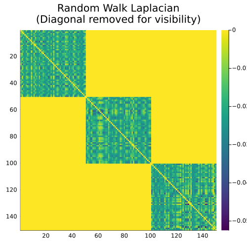

Laplacians
Once we have constructed the Affinity Matrix $W$, the next step is to compute the Graph Laplacian. The Laplacian matrix captures the structural properties of the graph, and its spectrum (eigenvalues and eigenvectors) is what we use to identify the clusters.
SpectralClustering.jl provides three types of Laplacians:
Unnormalized Laplacian
The unnormalized Laplacian is defined as:
\[L = D - W\]
where $D$ is the diagonal degree matrix with $D_{ii} = \sum_j W_{ij}$.
using SpectralClustering
L = compute_laplacian(W, UnnormalizedLaplacian())Random Walk Normalized Laplacian
The random-walk normalized Laplacian is often the preferred choice for spectral clustering because of its connection to Markov chains. It is defined as:
\[L_{rw} = I - D^{-1} W\]
L_rw = compute_laplacian(W, RandomWalkLaplacian())Symmetric Normalized Laplacian
The symmetric normalized Laplacian is defined as:
\[L_{sym} = I - D^{-1/2} W D^{-1/2}\]
L_sym = compute_laplacian(W, SymmetricLaplacian())Visualizing the Matrix Structure
We can visualize the structure of the matrices using a heatmap. If our data is perfectly clustered and the matrix rows/columns are ordered by their cluster label, the matrices will show a distinct block-diagonal structure!
Because the diagonal of the Random Walk Laplacian is exactly 1.0 while its off-diagonals are very small negative numbers, plotting the Laplacian directly often results in an image dominated entirely by the diagonal line. To actually see the block structure, we temporarily zero out the diagonal for visualization.
using SpectralClustering
using Plots
using LinearAlgebra
using Random
# Generate highly separated blobs
rng = Xoshiro(42)
X, y = make_blobs(rng, 150; centers=3, cluster_std=0.5)
# Compute Affinity and Laplacian
W = compute_affinity(X, RBFKernel(sigma=1.0))
L = compute_laplacian(W, RandomWalkLaplacian())
# Sort nodes by their true cluster labels to reveal the block structure
perm = sortperm(y)
L_sorted = L[perm, perm]
# Zero out the diagonal so it doesn't wash out the color scale
L_vis = copy(L_sorted)
L_vis[diagind(L_vis)] .= 0.0
heatmap(L_vis,
yflip=true,
c=:viridis,
title="Random Walk Laplacian\n(Diagonal removed for visibility)",
size=(500, 500)
)